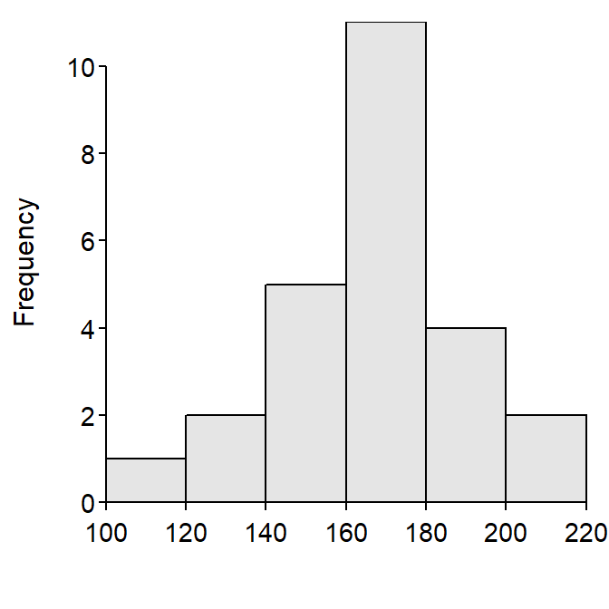

Fecal Coliform Counts I
 Fecal coliform is a bacterium that originates in the intestines of warm-blooded animals and, thus, may be found in their feces. Organic matter containing fecal coliform may be washed into lakes and streams in runoff following large rain events. In lakes and streams, the fecal coliform may lead to the growth of pathogens that are dangerous to the health of humans, or reduce oxygen available to fish and other aquatic life. Thus, fecal coliform levels are routinely monitored in many waterbodies in the United States.
Fecal coliform is a bacterium that originates in the intestines of warm-blooded animals and, thus, may be found in their feces. Organic matter containing fecal coliform may be washed into lakes and streams in runoff following large rain events. In lakes and streams, the fecal coliform may lead to the growth of pathogens that are dangerous to the health of humans, or reduce oxygen available to fish and other aquatic life. Thus, fecal coliform levels are routinely monitored in many waterbodies in the United States.
Students recorded fecal coliform counts (number of colony forming units (CFU) per 100 ml) in water samples from a nearby lake following a rainstorm that resulted in considerable runoff. The results from their samples are shown below.
n mean sd min Q1 median Q3 max
25.00 168.19 22.20 112.55 151.37 170.48 179.19 208.82 
Test, at the 5% level, if these results differ from the mean of 178 CFU/100ml predicted by a computer model.